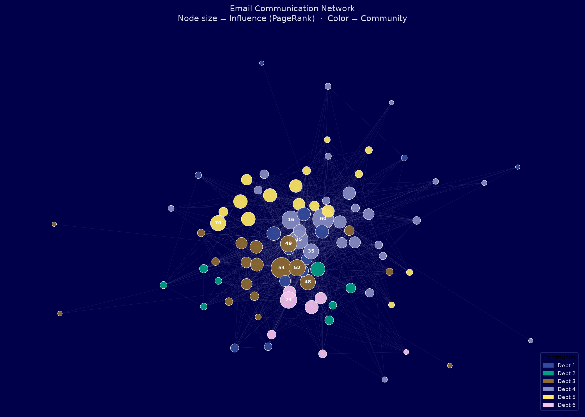
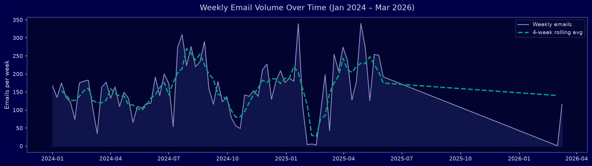
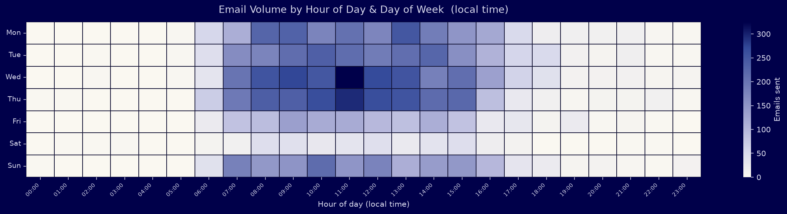
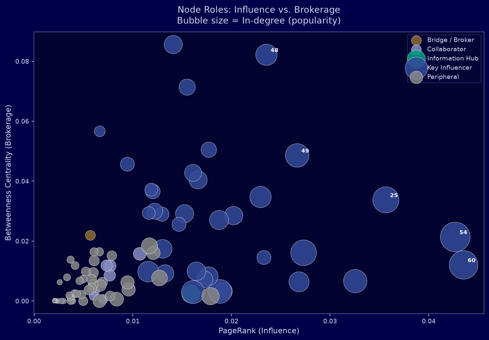
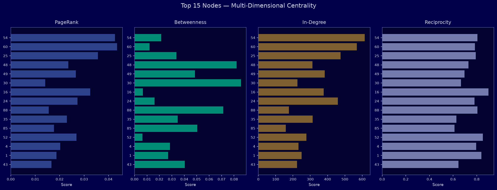
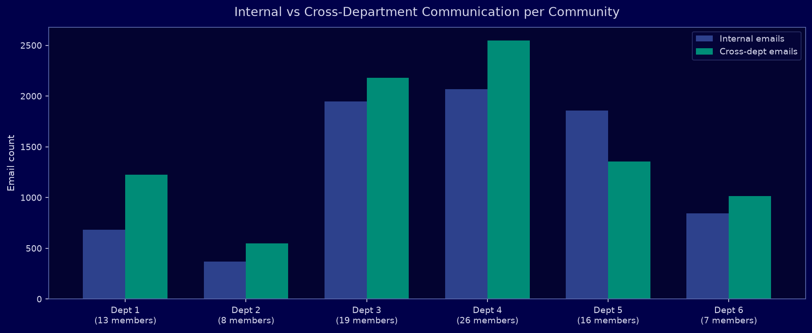

A demonstration of how Social Network Analysis transforms raw email interaction data into actionable insights about collaboration patterns, influence, and team dynamics.
Most organisations hold years of communication data — emails, chats, collaboration logs — and extract almost no strategic value from it. Social Network Analysis changes that. By modelling individuals as nodes and their interactions as weighted, directed edges, we surface the hidden structure of how your organisation actually works — not just how it appears on an org chart.
With a reciprocity of 70%, the vast majority of communication is genuinely bidirectional. An average path length of 1.86 hops means information reaches almost anyone in fewer than 2 steps — a hallmark of a healthy small-world network. A modularity of 0.4303 reveals clear team boundaries without isolation.
Each node represents a person. Each edge is a communication channel. Node size reflects overall influence (PageRank), and colour indicates which natural community the algorithm assigned each person to — without any prior knowledge of the org chart.

The algorithm identified 6 natural communities from email behaviour alone — no org-chart labels required. Cross-community edges highlight where inter-departmental collaboration occurs. Thin bridges flag bottlenecks: a single person carrying all cross-team communication. Losing that person means losing that connection.
Timestamps on every message let us analyse not just who talks to whom, but when. This reveals work rhythms, crunch periods, after-hours activity, and potential early burnout signals.


Temporal analysis answers: Are people working unusual hours? When are deadlines driving communication spikes? Is one team systematically sending messages outside business hours? These signals are invisible in aggregated reports but surface instantly here.
Beyond the org chart, SNA quantifies actual influence. We combine four independent metrics — PageRank, betweenness centrality, in-degree, and reciprocity — into a composite influence score, then assign each person a functional network role.
Central nodes with the highest combined influence, popularity, and reach. These individuals drive information flow across the entire organisation.
Nodes that connect otherwise separate groups. Removing them would fragment the network. Critical for cross-team knowledge transfer.
Highly popular receivers. Many colleagues reach out to them, making them focal points for information aggregation.
Nodes with high reciprocity — conversations are genuinely two-way. Strong bilateral relationships and mutual engagement.
Nodes at the edges of the network. May be specialists, newcomers, or siloed contributors with lower overall engagement.


| Rank | Node | Role | Community | In-Degree | Out-Degree | PageRank | Betweenness | Reciprocity | Influence Score |
|---|---|---|---|---|---|---|---|---|---|
| #1 | Node 54 | Key Influencer | Dept 3 | 615 | 637 | 0.04269 | 0.0214 | 0.806 |
|
| #2 | Node 60 | Key Influencer | Dept 4 | 569 | 645 | 0.04353 | 0.0121 | 0.784 |
|
| #3 | Node 25 | Key Influencer | Dept 4 | 475 | 390 | 0.03565 | 0.0338 | 0.792 |
|
| #4 | Node 48 | Key Influencer | Dept 3 | 313 | 453 | 0.02355 | 0.0822 | 0.73 |
|
| #5 | Node 49 | Key Influencer | Dept 3 | 384 | 547 | 0.02666 | 0.0486 | 0.696 |
|
| #6 | Node 30 | Key Influencer | Dept 5 | 226 | 125 | 0.0141 | 0.0856 | 0.667 |
|
| #7 | Node 16 | Key Influencer | Dept 4 | 378 | 187 | 0.03255 | 0.0066 | 0.9 |
|
| #8 | Node 24 | Key Influencer | Dept 6 | 460 | 338 | 0.02732 | 0.0161 | 0.781 |
|
| #9 | Node 88 | Key Influencer | Dept 4 | 177 | 298 | 0.01551 | 0.0714 | 0.806 |
|
| #10 | Node 35 | Key Influencer | Dept 4 | 314 | 391 | 0.02295 | 0.0347 | 0.627 |
|
Traditional reporting identifies leaders by title. SNA identifies them by actual communication behaviour. Key Influencers are the real opinion-shapers for change management. Brokers are the people whose departure creates knowledge silos. Information Hubs are overloaded focal points — candidates for delegation support or process automation.
Community detection reveals organic groupings that emerge from behaviour, not hierarchy. Comparing internal vs. cross-department communication per community shows which teams are siloed and which are highly collaborative. A modularity of 0.4303 indicates strong community structure — teams are clearly distinct with limited cross-boundary traffic.

An imbalance between internal and cross-department communication is an early warning sign of organisational siloing. With real customer data, this analysis pinpoints exactly which teams are not communicating — and whether this is intentional (specialist isolation) or problematic (missed collaboration opportunities).
The analyses demonstrated here apply directly to a wide range of real-world organisational challenges. With richer, labelled customer data, each use case becomes a concrete, decision-ready product delivered on your data.
Identify the true influencers before rolling out a new tool or policy. Target them first — they cascade adoption through the network organically.
Information Hubs with extreme in-degree are receiving far more than they can process. Surface overload signals before productivity drops or attrition occurs.
When a Key Influencer or Broker leaves, critical network links disappear with them. SNA identifies institutional knowledge holders and structural dependencies in advance.
Detected communities vs. official org chart — where do they diverge? Reorganise teams around actual collaboration patterns, not legacy hierarchy.
New hires who connect to central nodes integrate faster. Route introductions through the most-connected colleagues to cut time-to-productivity.
Sudden changes in communication patterns — a node going silent, a new dense cluster forming — can signal conflict, disengagement, or data risk weeks before it appears in conventional reporting.
This case study was produced entirely from a raw edge-list file with three columns: sender, receiver, timestamp. No labels, no names, no metadata. Everything you see was derived from communication structure alone.
12,216 directed, timestamped email edges spanning 802 days across 89 anonymised nodes. Source: SNAP / Stanford.
NetworkX (Python). Metrics: PageRank, betweenness, closeness, in/out-degree, reciprocity, clustering.
Louvain algorithm on weighted undirected projection. Modularity = 0.4303 (strong community structure).
Matplotlib & Seaborn, Uni Freiburg corporate design palette. Spring-layout force-directed network.